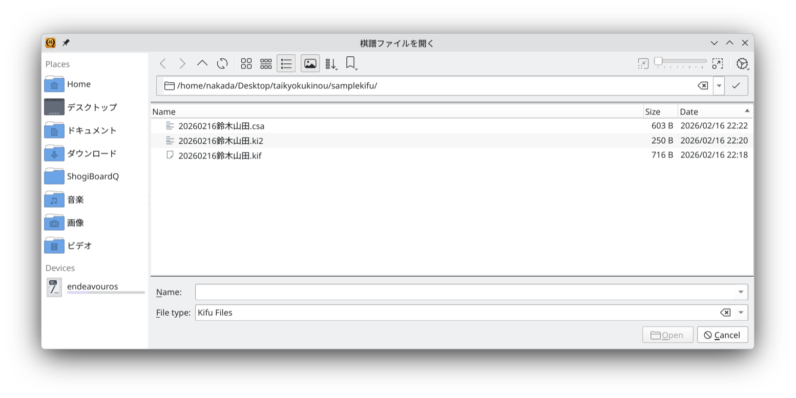
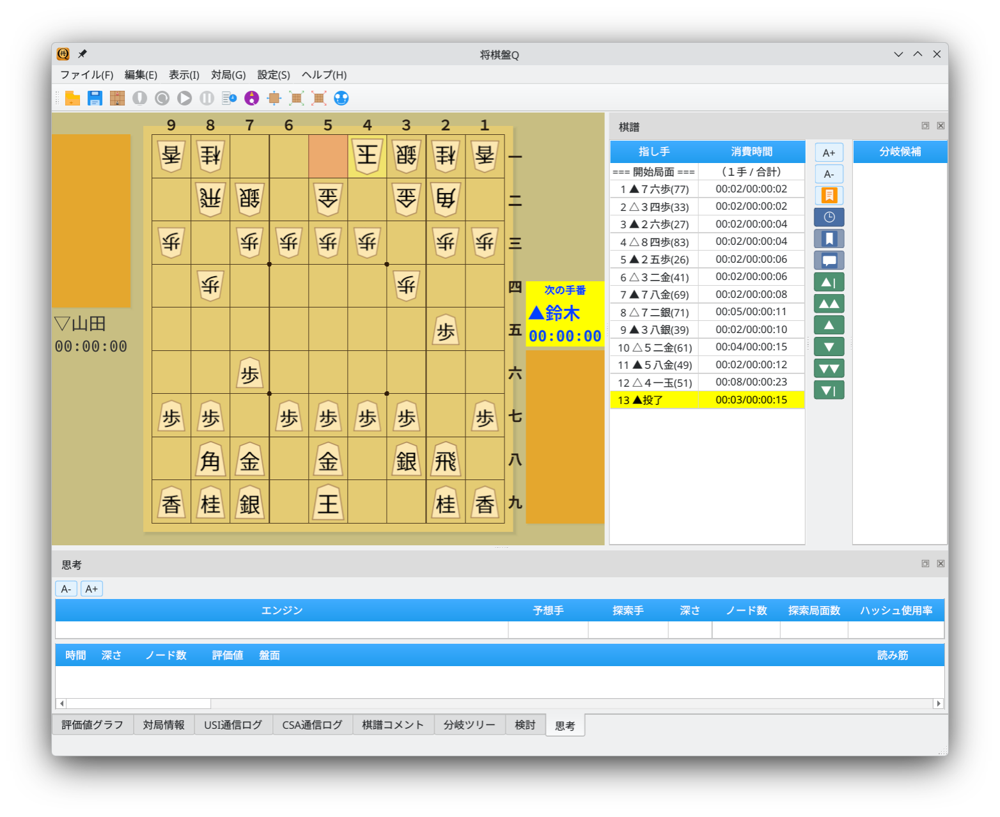
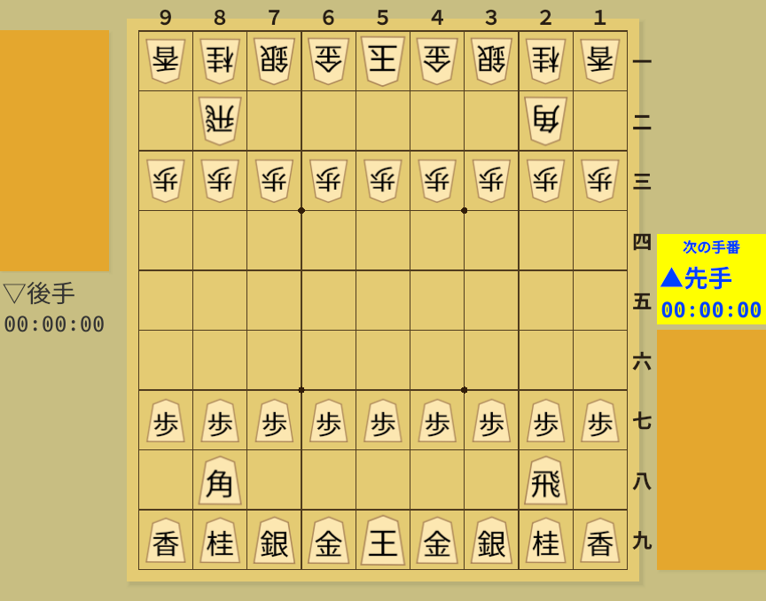
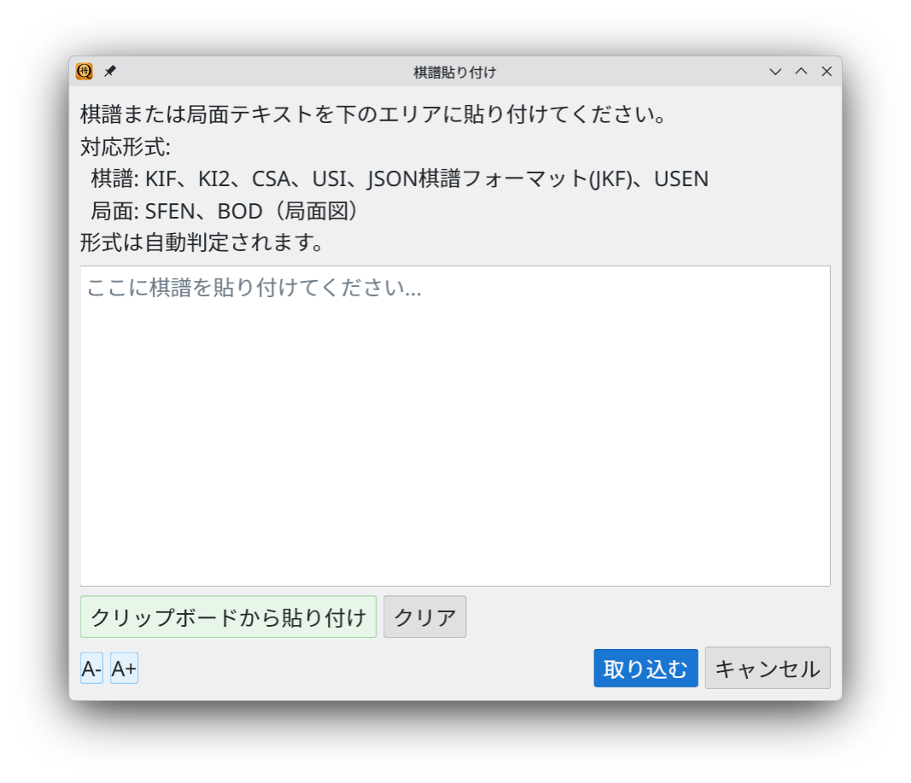

Load, save, and copy game records in multiple formats
Screenshots show the Japanese interface unless otherwise noted.
Load major game record formats, including records with variations
The following game record formats can be loaded.
| Format | Extension | Description |
|---|---|---|
| KIF | .kif .kifu | The standard Kifu for Windows format, recording move numbers, moves, and time spent |
| KI2 | .ki2 .ki2u | A compact KIF format that records moves horizontally |
| CSA | .csa | The Computer Shogi Association's standard format, using coordinate notation |
| JKF | .jkf | A JSON game record format that represents variations in a JSON structure |
| USI | .usi .sfen | USI protocol notation, as used in engine communication |
| USEN | .usen | USEN compression for compact game record encoding |
Choose File → Open Game Record File to open the file selection dialog. Use its filter to narrow the formats shown.

File selection dialog: choose KIF, CSA, JKF, USI, or USEN files
After loading, the game record area shows moves and time spent, and the board moves to the final position. Game information such as player names, date, and handicap is read automatically.

Loaded game record: moves and time spent in the move list
The same game can be represented in different formats. The examples below show one game in each format. Japanese notation and field names are preserved where they are part of the file format.
手合割：平手
先手：鈴木
後手：山田
手数----指手---------消費時間--
1 ７六歩(77) ( 0:02/00:00:02)
2 ３四歩(33) ( 0:02/00:00:02)
3 ２六歩(27) ( 0:02/00:00:04)
...先手：鈴木
後手：山田
▲７六歩 △３四歩 ▲２六歩 △８四歩 ▲２五歩 △３二金
▲７八金 △７二銀 ▲３八銀 △５二金 ▲５八金 △４一王
まで12手で後手の勝ちV2.2
N+鈴木
N-山田
P1-KY-KE-GI-KI-OU-KI-GI-KE-KY
P2 * -HI * * * * * -KA *
P3-FU-FU-FU-FU-FU-FU-FU-FU-FU
...
+7776FU,T2
-3334FU,T2
+2726FU,T2{
"header": {
"先手": "鈴木",
"後手": "山田"
},
"moves": [
{},
{"move":{"from":{"x":7,"y":7},
"to":{"x":7,"y":6},
"color":0,"piece":"FU"}},
...
]
}position startpos moves 7g7f 3c3d 2g2f 8c8d 2f2e 8d8e 6g6f 8e8f 8g8f1nsgkgsn1_9_ppppppppp_9_9_9_PPPPPPPPP_1B5R1_LNSGKGSNL.w.-~0.09k7ku0e46y22jm5t21a49co0n89h80rw.rSave game records in six formats
Choose File → Save As to save the record in your preferred format. Select the output format using the filter in the save dialog.
| Format | Extension |
|---|---|
| KIF Format | .kif .kifu |
| KI2 Format | .ki2 .ki2u |
| CSA Format | .csa |
| JKF Format | .jkf |
| USEN Format | .usen |
| USI Format | .usi |
Choose File → Save to overwrite the loaded file. Automatic saving after a game is also supported; select a destination directory in the game dialog.
Copy records, positions, and board images, or paste game records
Choose Edit → Copy Game Record to copy the current record to the clipboard in various formats for use in other applications.
| Menu Item | Content |
|---|---|
| Copy as KIF | Copy the entire game record in KIF format |
| Copy as KI2 | Copy the entire game record in KI2 format |
| Copy as CSA | Copy the entire game record in CSA format |
| Copy as USI (to Current Move) | Copy moves up to the displayed position in USI format |
| Copy as USI (All Moves) | Copy the entire game record in USI format |
| Copy as JKF | Copy the entire game record in JKF (JSON) format |
| Copy as USEN | Copy the entire game record in compressed USEN format |
Choose Edit → Copy Position to copy the current position to the clipboard.
| Menu Item | Content |
|---|---|
| Copy as SFEN | Copy the current position as an SFEN string |
| Copy as BOD | Copy the current position as a text board diagram (BOD) |
Choose Edit → Copy Board Image to copy the current board as an image to the clipboard, ready to paste into a blog or commentary article.

Copy board image: put an image of the board on the clipboard
Choose Edit → Paste Game Record to open the paste dialog. Paste a record into the text area and click Import; its format is detected automatically.

Paste dialog: automatic detection of KIF, KI2, CSA, USI, JKF, USEN, SFEN, and BOD
| Format | Detection Criteria |
|---|---|
| KIF | Contains Japanese KIF keywords such as 手数 (move number) or 指し手 (move) |
| KI2 | A sequence of moves beginning with ▲ or △ |
| CSA | Starts with a CSA header such as V2, N+, N-, or P1 |
| USI | USI command notation containing the moves keyword |
| JKF | JSON starting with { or [ |
| USEN | A Base64-like encoded string |
| SFEN | Position notation starting with position sfen, sfen, or startpos |